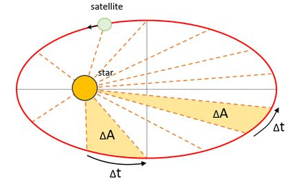

Gravity
Problem 1: Orbital Period and Orbital Radius
Motivation
The relationship between the square of the orbital period and the cube of the orbital radius, known as Kepler's Third Law, is a cornerstone of celestial mechanics. This simple yet profound relationship allows for the determination of planetary motions and has implications for understanding gravitational interactions on both local and cosmic scales. By analyzing this relationship, one can connect fundamental principles of gravity with real-world phenomena such as satellite orbits and planetary systems.
Task
- Derive the relationship between the square of the orbital period and the cube of the orbital radius for circular orbits.
- Discuss the implications of this relationship for astronomy, including its role in calculating planetary masses and distances.
- Analyze real-world examples, such as the Moon's orbit around Earth or the orbits of planets in the Solar System.
- Implement a computational model to simulate circular orbits and verify the relationship.
Kepler's Third Law Derivation
Kepler's Third Law states:
\(T^2 \propto R^3\)
From Newton’s form of Kepler’s Law, we use the gravitational force as the centripetal force:
\(F = \frac{GMm}{R^2} = m\frac{v^2}{R}\)
Velocity in a circular orbit is given by:
\(v = \frac{2\pi R}{T}\)
Substituting:
\(\frac{GM}{R^2} = \frac{4\pi^2 R}{T^2}\)
Rearranging for \(T^2\):
\(T^2 = \frac{4\pi^2}{GM} R^3\)
This confirms Kepler’s Third Law.
Implications for Astronomy
Kepler’s Third Law allows astronomers to: - Determine the mass of celestial bodies by measuring the orbits of their satellites. - Calculate distances between planets and stars based on orbital data. - Understand the motion of exoplanets around distant stars using Doppler spectroscopy.
Real-World Examples
- Moon’s Orbit Around Earth: Using Kepler’s Third Law, we can determine the Moon’s orbital period (about 27.3 days) given its average orbital radius of ~384,400 km.
- Planets in the Solar System: The relationship \(T^2 \propto R^3\) holds for all planets orbiting the Sun, allowing astronomers to predict orbital periods of newly discovered celestial objects.

Explanation
- The script creates an orbital path using the HTML5
<canvas>element. - A red dot moves along a circular trajectory to represent a satellite.
- The animation runs continuously using
requestAnimationFrameto update the position of the orbiting body.
Extending to Elliptical Orbits
Kepler’s Third Law applies to elliptical orbits by considering the semi-major axis \(a\) instead of the radius \(R\):
\(T^2 = \frac{4\pi^2}{GM} a^3\)
This means the orbital period still depends on the cube of the semi-major axis rather than just the radius.
Conclusion
This document explains Kepler’s Third Law, derives its mathematical formulation, and provides interactive simulations and computational models to verify and visualize the concept. The law is fundamental in astrophysics and celestial mechanics, helping us understand planetary motions, satellite orbits, and exoplanetary systems.